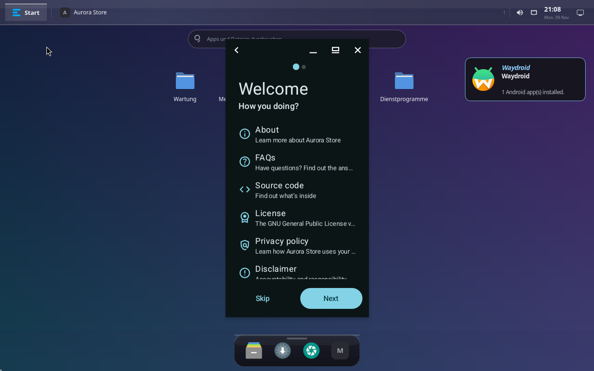
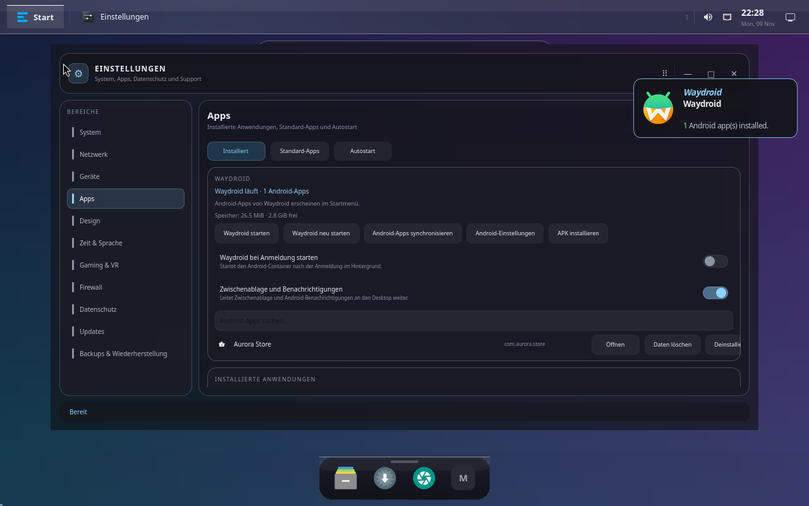
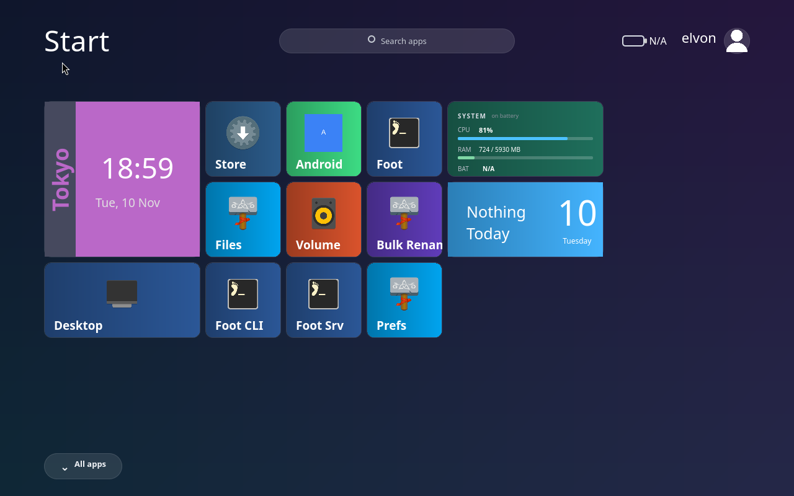
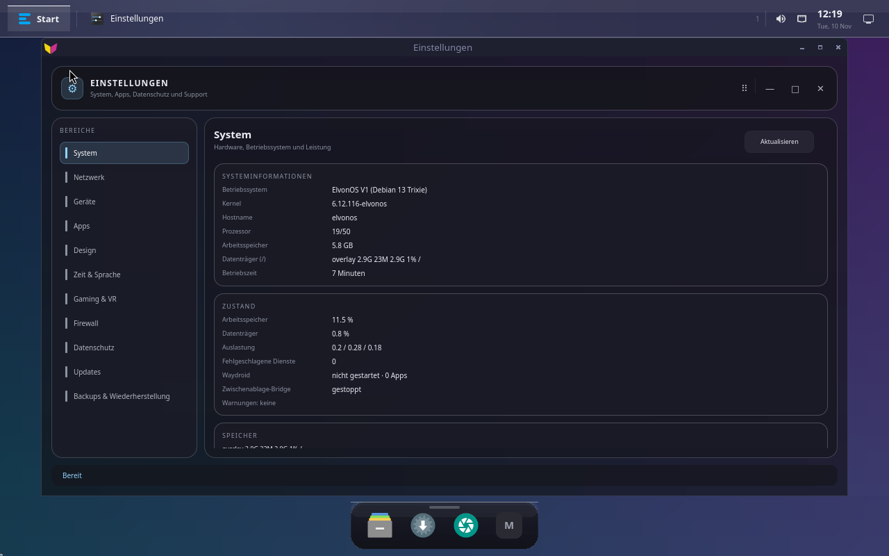
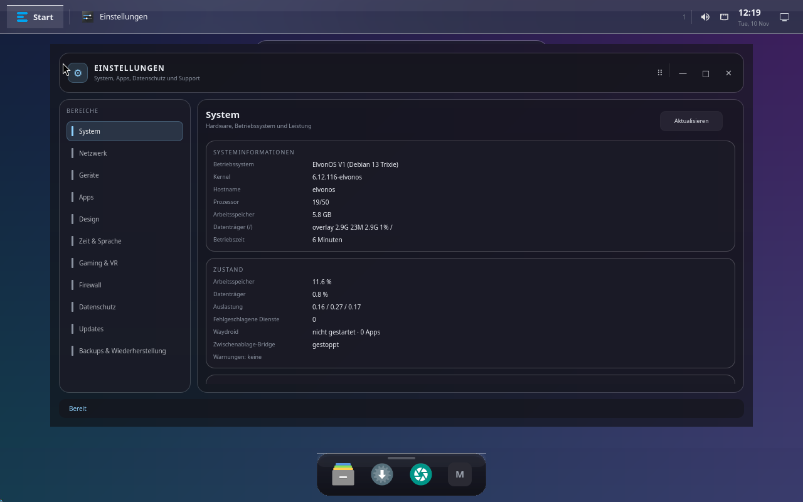
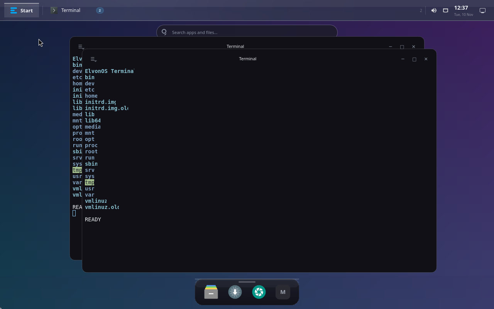
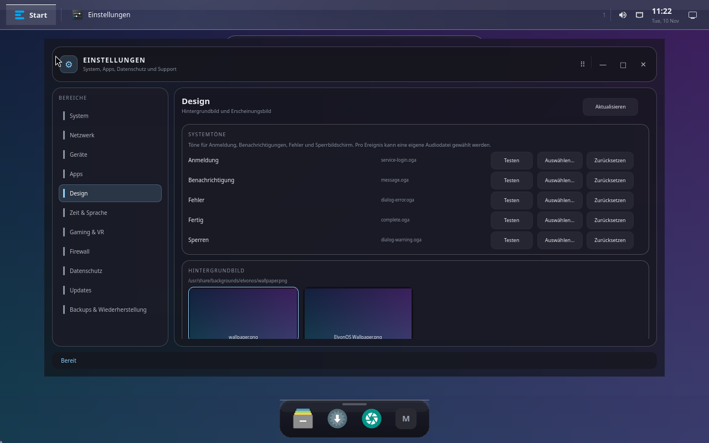
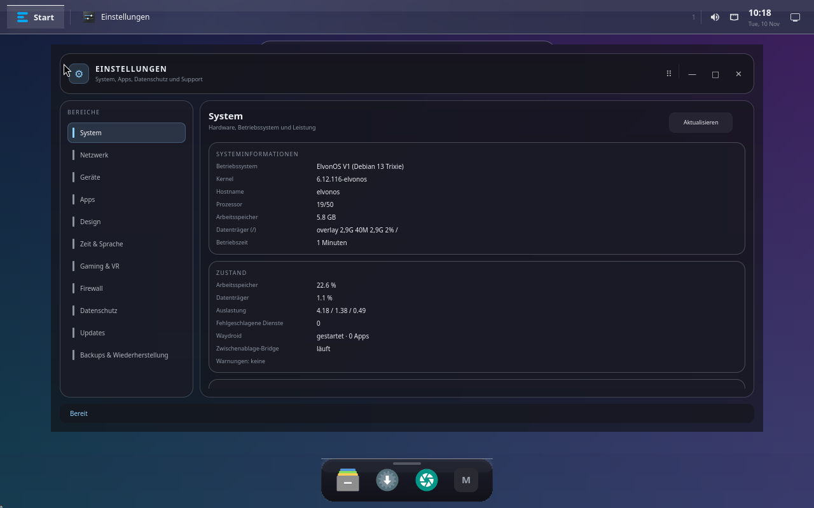
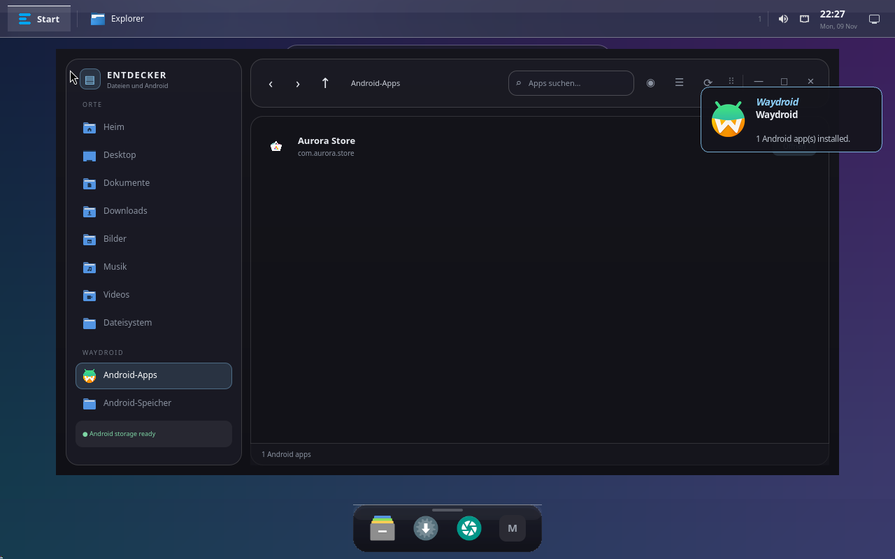
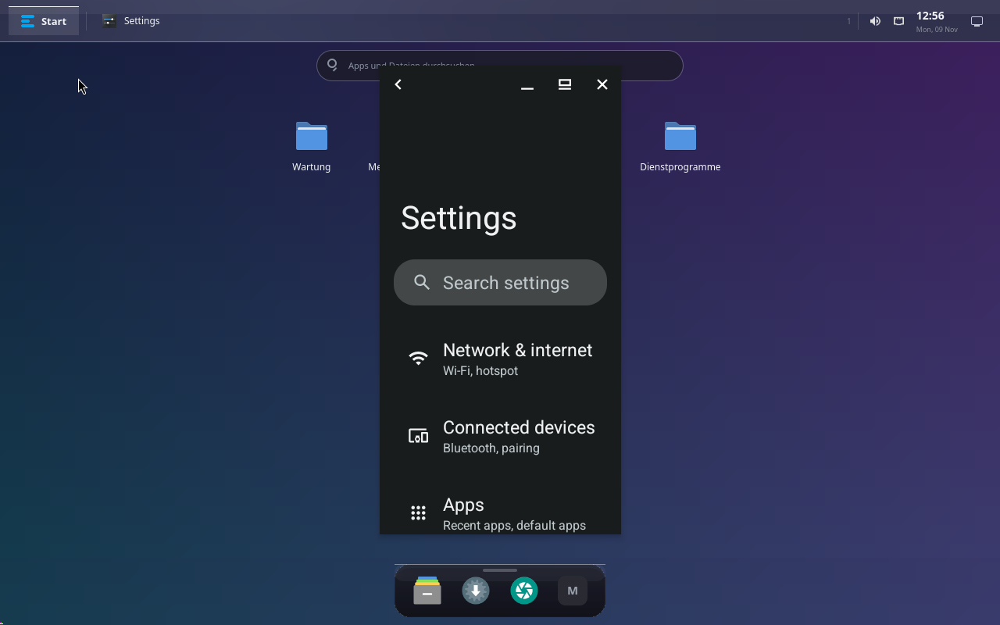

Native Rust-Session, nativer App-Start, echte APK-Icons und die Waydroid-Karte in
Einstellungen → Apps. Aufgenommen aus dem Live-ISO in QEMU (Windows, WHPX, Virgl).
Android-Boot ~40–60 s
Aurora installieren 4 s
App starten 3 s
Icon-Extraktion 800×800 PNG

Aurora Store läuft als echtes Multi-Window-Fenster auf dem ElvonOS-Desktop
(com.aurora.store/.ComposeActivity, mCurrentFocus bestätigt).

Einstellungen → Apps: Status, Speicherverbrauch, Start/Neu starten/Sync/Android-Einstellungen/APK,
Autostart, Zwischenablage-/Benachrichtigungs-Bridge, App-Suche und die Android-App-Liste mit echtem
APK-Icon, Öffnen, Daten löschen und Deinstallieren.

Win8Start mit der neuen Android-Kachel (Metro-Icon, öffnet die Android-App-Liste),
Live-Kacheln für Uhr, System und Kalender.

Metro-App-Fenster: Anwendungen füllen die Oberfläche wie bei Windows 8.1
(Einstellungen → Design → App-Fenster → Metro).

Gleiche App im Desktop-Modus: normales, verschiebbares Fenster.

ElvonOS Terminal: eigenes PTY-Terminal mit ANSI-Farben, Scrollback, Auswahl/Kopieren und
Profilen für Shell und Android (--android).

Einstellungen → Design: Systemtöne für Anmeldung, Benachrichtigung, Fehler, Fertig und
Sperren – jeweils Test, eigene Datei auswählen oder zurücksetzen.

Einstellungen → System: die neue Karte Zustand mit Speicher, Datenträger, Auslastung,
fehlgeschlagenen Diensten, Waydroid-Status, Clipboard-Bridge und Warnungen (Health-Layer).

Explorer im Modus --android-apps: Android-Apps mit Icon, Seitenleiste mit
Android-Apps und Android-Speicher (automatisch eingebunden).

Android-Einstellungen, nativ über am start gestartet, als Multi-Window-Fenster.